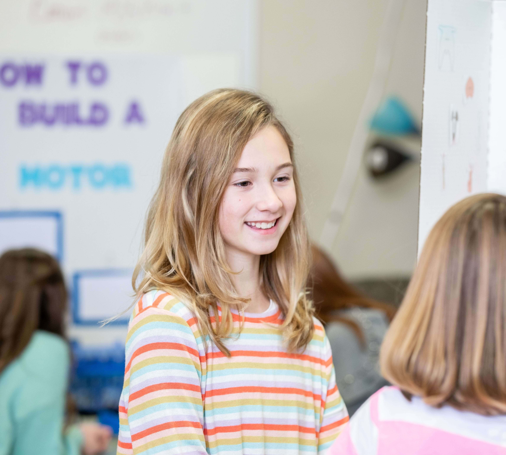

Showcase
Speaking practice in action
Student presentations, workshops, and milestone events that show confidence developing through practice.
Media
Use this page to publish photos, event recaps, student achievements, announcements, and press items.

Student presentations, workshops, and milestone events that show confidence developing through practice.
Feature public speaking competitions, debate events, town hall challenges, awards, and community showcases.
Publish practical tips on confidence, presentation habits, leadership, and communication at home.